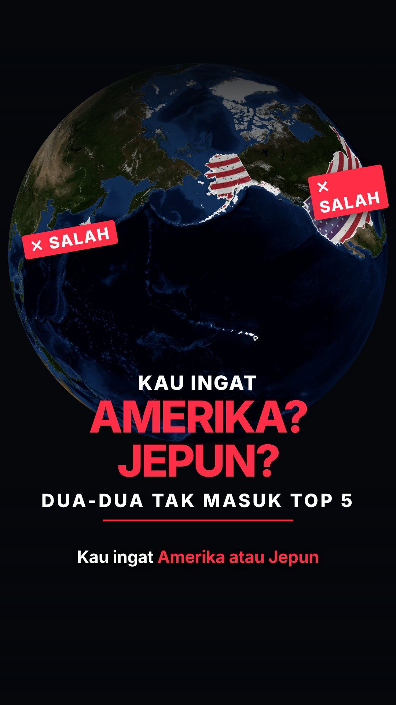
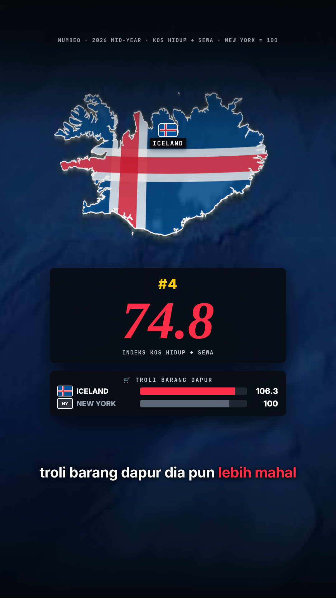
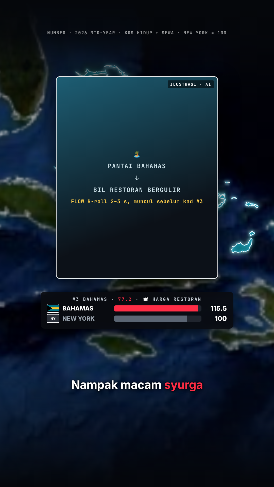
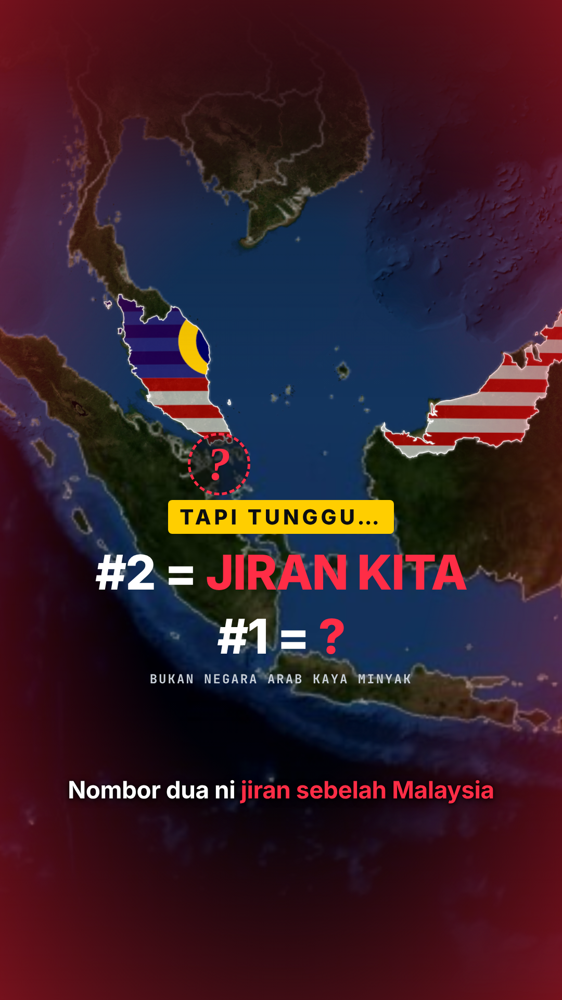
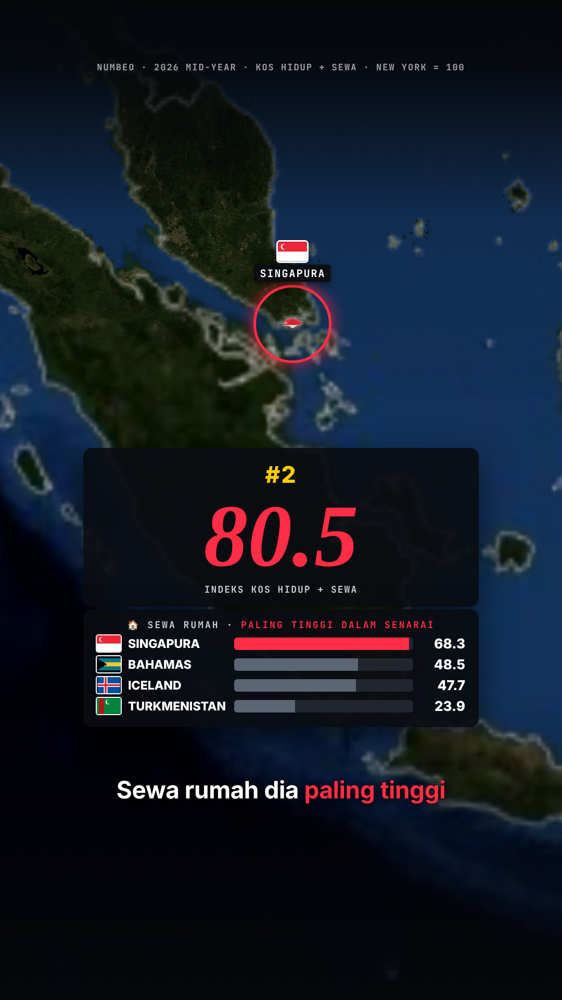
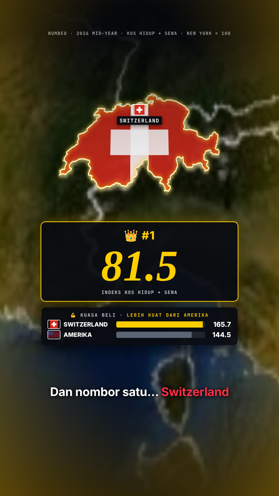
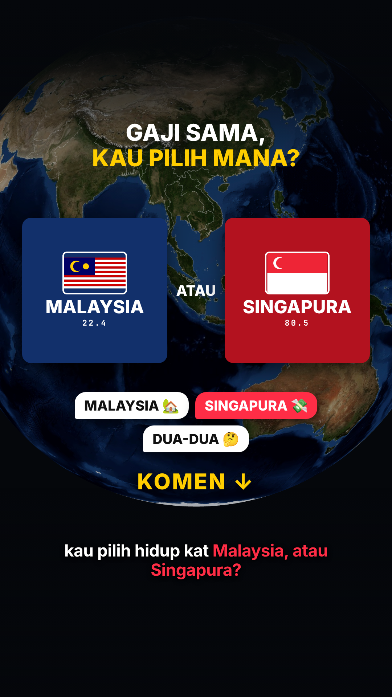

01 · 0:00
Hook
"Kau ingat Amerika atau Jepun negara paling mahal untuk hidup? Salah. Dua-dua tak masuk Top 5 pun."
Glob pusing AS → Jepun, bendera isi negara, cop ✕ SALAH hentak + tint merah. Lepas tu zum keluar, chip NEW YORK = 100. Tiada negara Top 5 ditanda.

02 · 0:06
#5 Turkmenistan
"Nombor lima, Turkmenistan. 66.1. Peliknya, barang dapur kat sini lebih mahal dari New York."
Terbang ke Asia Tengah, bendera isi negara. Kad #5 · 66.1 count-up, bar 116.3 vs New York 100.

03 · 0:11
#4 Iceland
"Nombor empat, Iceland. 74.8. Cantik memang cantik, tapi troli barang dapur dia pun lebih mahal…"
Terbang ke Atlantik Utara. B-roll AI salji 2 s (pilihan). #4 · 74.8, 🛒 106.3 vs 100.

04 · 0:16
#3 Bahamas
"Nombor tiga, Bahamas. 77.2. Nampak macam syurga, tapi sekali makan kat restoran…"
Pulau bercahaya biru. Tetingkap B-roll AI: pantai → resit panjang, lepas tu kad #3 · 77.2 + 🍽️ 115.5 vs 100.

05 · 0:22
Re-hook
"Tapi tunggu. Nombor dua ni jiran sebelah Malaysia. Dan nombor satu… bukan negara Arab kaya minyak."
Muzik dip, freeze 0.4 s, terbang laju ke Asia Tenggara. Malaysia bendera, bulatan ? di selatan. #2 = JIRAN KITA · #1 = ?

06 · 0:27
#2 Singapura
"Nombor dua, Singapura. 80.5. Sewa rumah dia paling tinggi dalam senarai ni."
Zum ke selatan Semenanjung, Singapura bendera + cincin merah. #2 · 80.5, 🏠 bar sewa: Singapura 68.3 jauh di depan.

07 · 0:32
#1 Switzerland
"Dan nombor satu… Switzerland. 81.5. Tapi kuasa beli orang dia, lebih kuat dari orang Amerika."
Pause mikro, terbang ke Eropah. Tint emas, kad 👑 #1 · 81.5 bingkai emas, hentakan paling besar. 💪 165.7 vs Amerika 144.5.

08 · 0:39
Plot twist
"Malaysia? Cuma 22.4."
Zum keluar, carta Top 5 penuh, · · ·, baris MALAYSIA 22.4 hijau masuk paling akhir.

09 · 0:42
Komen!
"Jadi kalau gaji sama, kau pilih hidup kat Malaysia, atau Singapura? Komen kat bawah."
GAJI SAMA, KAU PILIH MANA? Dua butang Malaysia vs Singapura, gelembung komen, KOMEN ↓, lepas tu outro.